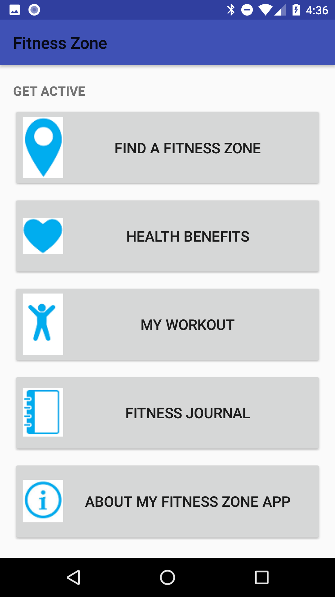
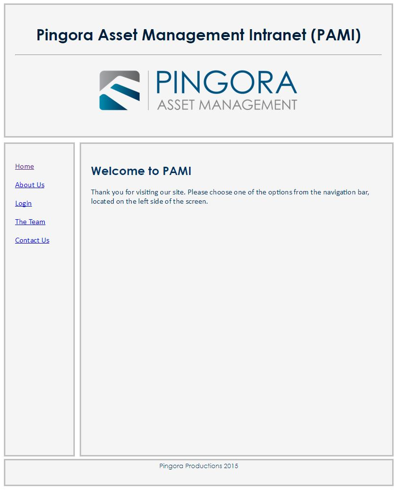
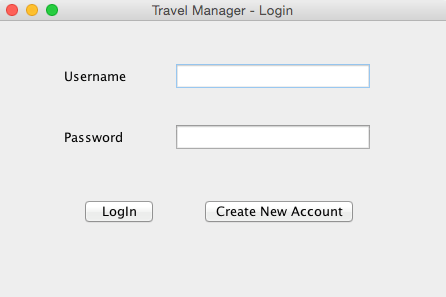

If you build it, he will come.
Fitness Zone
Android Mobile Application

I developed the Fitness Zone (FZ) mobile application in 16 weeks as part of my software engineering
graduate degree completion requirements. The app is intended for neighborhood users of the Trust for
Public Land (TPL) Fitness Zones.
Key achievements include:
- Taught myself Android programming and Google's material design principles, while developing this app.
- Converted mockups into executable code.
- Worked cross-functionally with stakeholders, including TPL representatives, Regis faculty, and Regis physical therapy students.
Tools used:
Java, XML, Android Studio, Gson, JSON, Google Maps API, GitHub
Java, XML, Android Studio, Gson, JSON, Google Maps API, GitHub
You can also review the project here:
https://github.com/adrienneh99/FitnessZone
Pingora Intranet
Fictional Website

Pingora Intranet is an internal website that I developed incrementally over two courses. In the
first course, I designed and developed the website, and structured and styled its content. In the
second course, I modified the web application using JavaScript frameworks and incorporated dynamic
web page behavior.
Tools used:
CSS, HTML, JavaScript, NetBeans, MySQL, Jasmine, AJAX, AngularJS, Balsamiq, Bootstrap, FlexSlider, Google Maps API, Google Places API, jQuery, JSON, PHP
CSS, HTML, JavaScript, NetBeans, MySQL, Jasmine, AJAX, AngularJS, Balsamiq, Bootstrap, FlexSlider, Google Maps API, Google Places API, jQuery, JSON, PHP
You can review the project here:
https://github.com/adrienneh99/PingoraIntranet
Travel Manager
Desktop & Web Application

Travel Manager is a fictional travel profile manager that I developed incrementally over three
courses using layered software architecture. During the first two courses, I documented and
developed Travel Manager as a desktop application. Then I converted the desktop application into a
web application during the third course.
Tools used:
Java, HTML, XML, Java SE, Eclipse, NetBeans, Apache Ant, Connector/J JDBC driver, Hibernate, MySQL, Apache Tomcat, JavaServer Faces (JSF), Spring Framework, Sysdeo Tomcat plugin, JUnit, Log4j
Java, HTML, XML, Java SE, Eclipse, NetBeans, Apache Ant, Connector/J JDBC driver, Hibernate, MySQL, Apache Tomcat, JavaServer Faces (JSF), Spring Framework, Sysdeo Tomcat plugin, JUnit, Log4j
You can review the project here:
https://github.com/adrienneh99/TravelManager